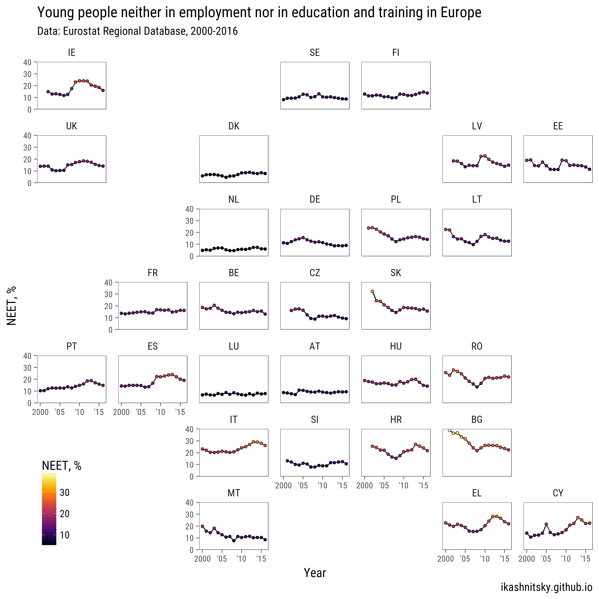

![]()
library(tidyverse)
library(lubridate)
library(forcats)
library(eurostat)
library(geofacet)
library(viridis)
library(ggthemes)
library(extrafont)
# Find the needed dataset code
# http://ec.europa.eu/eurostat/web/regions/data/database
# download fertility rates for countries
neet <- get_eurostat("edat_lfse_22")
# if the automated download does not work, the data can be grabbed manually at
# http://ec.europa.eu/eurostat/estat-navtree-portlet-prod/BulkDownloadListing
neet |>
filter(geo |> paste |> nchar == 2,
sex == "T", age == "Y18-24") |>
group_by(geo) |>
mutate(avg = values |> mean()) |>
ungroup() |>
ggplot(aes(x = time |> year(),
y = values))+
geom_path(aes(group = 1))+
geom_point(aes(fill = values), pch = 21)+
scale_x_continuous(breaks = seq(2000, 2015, 5),
labels = c("2000", "'05", "'10", "'15"))+
scale_y_continuous(expand = c(0, 0), limits = c(0, 40))+
scale_fill_viridis("NEET, %", option = "B")+
facet_geo(~ geo, grid = "eu_grid1")+
labs(x = "Year",
y = "NEET, %",
title = "Young people neither in employment nor in education and training in Europe",
subtitle = "Data: Eurostat Regional Database, 2000-2016",
caption = "ikashnitsky.github.io")+
theme_few(base_family = "Roboto Condensed", base_size = 15)+
theme(axis.text = element_text(size = 10),
panel.spacing.x = unit(1, "lines"),
legend.position = c(0, 0),
legend.justification = c(0, 0))As an example of Eurostat data usage I chose to show the dynamics of NEET (Young people neither in employment nor in education and training) in European countries. The example is using the brilliant geofact package.

The whole code may be downloaded from the gist